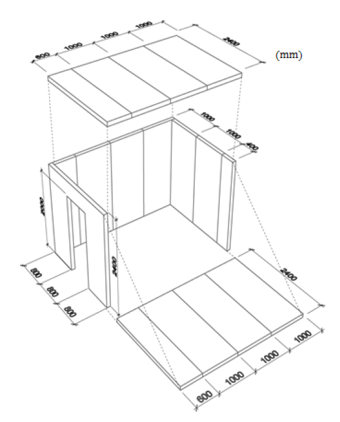
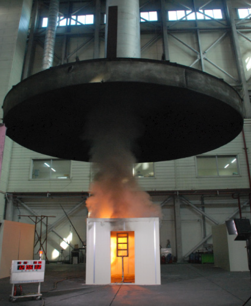

복합자재 대형 화재시험방법(ISO 13784-1)
ISO 13784-1은 복합자재(판널)의 실제규모에 해당하는 화재시험입니다.
|  ISO 13784-1 test size |
해당 시험은 ISO 9705, Room Corner Test에 근거하여 재정된 화재시험으로 방 형태로 시공한 시험체의 구석에 화원을 설치하여 화재평가를 하는 방법입니다. 시험체의 크기는 길이 3.6 m, 너비 2.4 m, 높이 2.4 m의 크기로 하고 한 면을 선택하여 너비 0.8 m, 높이 2 m의 개구부를 설치합니다. (그림 참조). 시험체에 사용된 샌드위치패널의 두께는 100 mm 두께의 패널을 사용하고 시험체 구석에 사용되는 점화원은 프로판가스버너에 외부 화염을 이용하여 점화합니다. |
초기 10분동안 100 kW로 가열하며, 이후 10분 동안 300 kW로 가열하는데요. 시험 시간은 폐쇄 공간에서 가연성 재료의 화재가 전체 면적으로 확산되는 상태인 플래시오버가 발생되는 시간까지 시험한다.

ISO 13784-1 test.
ISO 13784-1 실물화재 시험 에서는 점화원과 시험체의 열방출률 합이 1,000 kW에 도달하는 시점을 플래시오버로 정의하고 있습니다. 시험이 진행되는 동안 K type 열전대를 설치하여 개구부 온도 변화를 기록합니다.
플래시오버(flashover) ?
화재의 초기 단계에서 연소물로부터의 가연성 가스가 천장 부근에 모이고 그것이 일시에 인화해서 폭발적으로 방 전체가 불꽃이 도는 현상으로 플래시오버가 일어나기 전까지가 실제 대피시간이라고 볼 수 있습니다.
플래시오버는 폭발을 일으키는 작용을 하여 대형화재로 번지게 되고 소방관분들도 위험한 시간입니다.
화재의 초기 단계에서 연소물로부터의 가연성 가스가 천장 부근에 모이고 그것이 일시에 인화해서 폭발적으로 방 전체가 불꽃이 도는 현상으로 플래시오버가 일어나기 전까지가 실제 대피시간이라고 볼 수 있습니다.
플래시오버는 폭발을 일으키는 작용을 하여 대형화재로 번지게 되고 소방관분들도 위험한 시간입니다.
효과적으로 플래시오버를 지연시켜 화재시
재실자의 인명피해 및 화재 손상에 따른
경제적 손실을 최소화할 수 있는
화염확산방지 시스템 적용이 논의되고 있습니다.
준불연 가등급 EPS 단열재 DK보드
건축용 / 외단열용 / 판넬용
문의 1855-2240